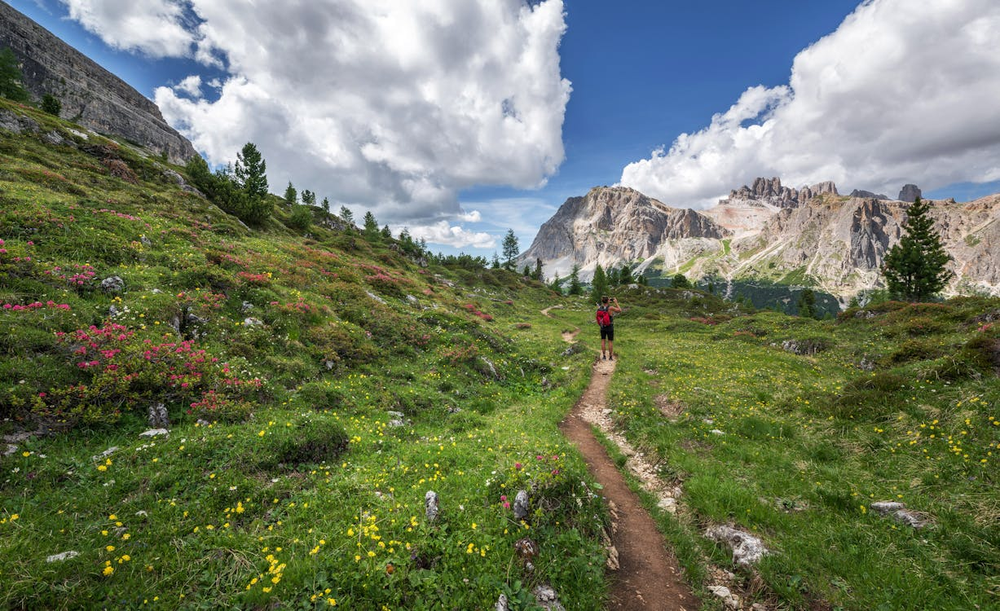

With summer heating up across North America, the options for getting outside are endless. From short day hikes along local trails to multi-day backcountry adventures, hiking is one of the best ways to explore the outdoors, stay active, and clear your head. Whether you are a seasoned hiker who logs hundreds of kilometres a year or a weekend warrior dusting off the boots for the first time this season, your body needs to be prepared for what the trail demands.
Hiking puts your muscles, joints, and connective tissues through a workout that is quite different from your everyday routine. Uneven terrain, steep inclines, heavy packs, and long hours on your feet all take a toll - especially if your body is not conditioned for it. The good news is that with a little preparation, you can avoid the most common hiking injuries and spend more time enjoying the views instead of nursing sore joints.
The Most Common Hiking Injuries
Before we dive into prevention, it helps to understand what tends to go wrong on the trail. These are the injuries physiotherapists see most often in hikers:
Low Back Pain
Carrying a loaded backpack for hours puts significant stress on your lower back. The weight pulls your centre of gravity forward, forcing your back muscles to work overtime to keep you upright. If your core is weak or your hip flexors are tight from sitting all week, the lower back takes the brunt of the load. Steep uphill sections and uneven footing make this even worse because your spine has to constantly adapt to shifting angles and impact.
Shoulder and Neck Pain
An ill-fitting backpack - or one that sits too far from your body - creates excessive pull on the shoulders and upper trapezius muscles. Over the course of a long hike, this leads to a deep ache across the tops of the shoulders, stiffness in the neck, and sometimes tension headaches. Hikers who carry too much weight or who have their pack straps adjusted incorrectly are especially prone to this.
Knee Pain
The knees absorb enormous force during hiking, particularly on the descent. Walking downhill generates forces of up to three to four times your body weight through the knee joint with every step. Without adequate quad strength to control the descent, the joint cartilage, tendons, and ligaments take a beating. Pain around or below the kneecap is the most common complaint, but lateral knee pain from the IT band and inner knee strain are also frequent.
Ankle Sprains
Uneven terrain, loose rocks, tree roots, and wet surfaces all create opportunities for the ankle to roll. An ankle sprain happens when the foot turns inward suddenly, stretching or tearing the ligaments on the outside of the ankle. It is the single most common acute hiking injury, and one bad sprain can leave the ankle unstable for future hikes if not properly rehabilitated.
Foot Pain and Blisters
Poorly fitting boots, wet socks, and long distances are a recipe for blisters, plantar fasciitis, and general foot fatigue. The repetitive impact of thousands of steps on hard, uneven ground can irritate the plantar fascia - the thick band of tissue along the bottom of the foot - leading to a sharp, burning pain in the heel that worsens with each step.
How to Prevent Hiking Injuries
Most hiking injuries are preventable. They tend to happen when the body is either underprepared for the demand or when equipment is not suited to the task. Here is what you can do to stay healthy on the trail.
1. Start a Stretching Program Before the Season
If you have spent the winter months mostly sitting, your muscles are likely tight and shortened - particularly your hip flexors, hamstrings, calves, and upper back. Hitting the trail without addressing this tightness is asking for trouble.
Start a daily stretching routine at least two to three weeks before your first big hike of the season. Focus on the areas that take the most stress during hiking:
- Hip flexor stretch - step into a deep lunge and press your hips forward. Hold for 30 seconds each side. Tight hip flexors are one of the biggest contributors to low back pain on the trail
- Hamstring stretch - place one foot on a low step or rock and lean forward from the hips with a straight back. Hold for 30 seconds. Flexible hamstrings reduce strain on your lower back and knees
- Calf stretch - stand on the edge of a step with your heels hanging off and gently lower them. Hold for 30 seconds. Your calves work extremely hard on inclines, and tight calves contribute to Achilles tendon pain and plantar fasciitis
- Quad stretch - standing on one leg, pull your opposite heel toward your glute. Hold for 30 seconds each side. Strong, flexible quads protect your knees on the descent
- Upper back and chest opener - stand in a doorway with your arms out to the sides at 90 degrees and gently lean through. Hold for 30 seconds. This counteracts the forward pull of a heavy pack
On the trail itself, take a few minutes to stretch before you start walking and during longer rest breaks. Your muscles cool down quickly at rest, especially at higher elevations, so even brief stretching keeps them supple.
2. Strengthen Your Core and Quads
Stretching keeps you flexible, but strength is what protects your joints. The two most important muscle groups for hikers are the core and the quadriceps.
Your core - the deep stabilizing muscles around your trunk - acts as a natural brace for your spine. A strong core absorbs the impact of walking on rough terrain and supports the weight of your pack so your lower back does not have to do all the work. Planks, dead bugs, and bird dogs are excellent exercises that target the deep core muscles hikers need most.
Your quadriceps are your primary shock absorbers on downhill sections. When your quads are strong, they control the descent smoothly and take pressure off the knee joint. When they are weak, the load transfers directly to the cartilage, tendons, and ligaments - which is when pain starts. Squats, lunges, and step-downs are the best exercises to build the quad strength you need for the trail.
A simple pre-season strengthening program might look like this:
- Bodyweight squats - 3 sets of 15 repetitions
- Walking lunges - 3 sets of 12 per leg
- Step-downs - stand on a step and slowly lower one foot to the ground, controlling the descent with the standing leg. 3 sets of 10 per leg
- Planks - 3 sets of 30–45 seconds
- Glute bridges - 3 sets of 15 repetitions. Strong glutes stabilize the pelvis and take load off the lower back and knees
Aim to do this routine three times a week for four to six weeks before a major hike. You will notice a real difference in how your body handles the trail.
3. Choose the Right Backpack and Fit It Properly
Your backpack can either support your body or slowly break it down over the course of a hike. The difference comes down to fit and how you pack it.
A good hiking backpack should:
- Have a hip belt - this transfers the majority of the weight from your shoulders to your hips, which are much better equipped to carry load. The hip belt should sit on top of your hip bones, not around your waist
- Fit your torso length - not your height. A pack that is too long or too short will shift weight to the wrong places. Most outdoor stores can measure your torso and help you choose the right size
- Ride close to your body - use the sternum strap and load lifter straps to pull the pack snug against your back. A pack that sways or sits away from your body creates a leveraging force that amplifies with every step
When loading your pack, put the heaviest items - like water, food, and your stove - close to your back and at mid-height. This keeps the centre of gravity near your own, reducing the forward pull on your spine. Light, bulky items like sleeping bags go at the bottom, and things you need quick access to go in the top lid or side pockets.
4. Invest in Good Hiking Boots
Your footwear is the foundation of every step on the trail. The right hiking boots can prevent ankle sprains, reduce foot fatigue, protect against blisters, and keep your feet stable on rough terrain.
When choosing hiking boots, look for:
- Ankle support - mid-cut or high-cut boots that stabilize the ankle joint are essential for uneven terrain. Trail runners may be fine for well-groomed paths, but for rocky or root-covered trails, ankle support matters
- A firm, grippy sole - good tread prevents slipping on wet rocks, loose gravel, and muddy sections. Look for soles with deep lugs made from durable rubber
- Proper fit - your boots should have about a thumb's width of space in front of your longest toe. This prevents your toes from jamming into the front on steep descents - one of the most common causes of black toenails and foot pain in hikers
- Break-in time - never take brand-new boots on a long hike. Wear them around the house and on shorter walks for at least a week or two to let the material soften and conform to your foot shape
Good socks matter too. Choose moisture-wicking hiking socks made from merino wool or synthetic blends. Cotton socks trap moisture and dramatically increase blister risk.
5. Carry a Compression Bandage
Even with the best preparation, accidents happen. An ankle sprain on the trail can turn a great day into a painful ordeal, especially if you are hours from the trailhead.
Carrying a compression bandage (like an elastic wrap) in your first-aid kit is a simple precaution that can make a big difference. If you roll an ankle, compression helps control swelling and provides support so you can carefully make your way back. Wrapping the ankle in a figure-eight pattern provides the most effective stabilization.
If you have a history of ankle sprains, consider wearing an ankle brace on the affected side during hikes. A lightweight lace-up ankle brace fits inside your boot and provides extra stability without adding significant weight.
6. Stay Hydrated
Dehydration does more than make you thirsty - it directly affects your muscles and joints. When you are dehydrated, your muscles fatigue faster, your reaction time slows, and your coordination suffers. All of these increase your risk of tripping, rolling an ankle, or pushing through a hike when your body is telling you to stop.
A good rule of thumb is to drink about 500 ml of water per hour of hiking, more in hot weather or at higher elevations. Do not wait until you are thirsty - by the time you feel thirst, you are already mildly dehydrated. Sip consistently throughout the hike rather than gulping large amounts at rest stops.
Electrolyte tablets or powder can be helpful for longer hikes or hot days. When you sweat, you lose sodium, potassium, and magnesium along with water. Plain water alone does not replace these, and an electrolyte imbalance can lead to cramping and early fatigue.
7. Use Trekking Poles
Trekking poles are one of the most underrated pieces of hiking gear. They reduce the load on your knees by up to 25 percent on descents, improve balance on uneven terrain, and help distribute the work across your upper body so your legs do not take all the strain.
Poles are especially valuable if you are carrying a heavy pack, dealing with knee issues, or tackling steep terrain. Adjust them to a length where your elbows are at roughly 90 degrees when the tips are on the ground beside you. Shorten them for uphill sections and lengthen them for downhill.
8. Know When to Rest
One of the most common mistakes hikers make is pushing through pain or fatigue because they want to hit a distance target or keep up with the group. On the trail, ignoring your body's signals is how minor issues become serious injuries.
Take regular breaks - especially on longer hikes. Use rest stops to stretch, hydrate, snack, and check in with how your body feels. If a knee is starting to ache, that is your cue to slow down, adjust your gait, or use your trekking poles more actively - not to power through and hope it goes away.
What to Do If You Get Injured on the Trail
If you do sustain an injury during a hike, the first priority is managing it safely so you can get back to the trailhead or to help.
- Ankle sprain - stop, compress with an elastic bandage, and elevate if possible. Test whether you can bear weight. If you can walk with manageable pain, proceed slowly and carefully. If not, you may need assistance
- Knee pain - reduce your pace, shorten your stride on descents, and use trekking poles if you have them. Avoid locking your knees straight - keep a slight bend to absorb shock
- Back pain - loosen your pack straps and redistribute the weight to your hips. Take frequent short breaks to decompress your spine. Standing backbends (hands on hips, gently arching backward) can relieve disc pressure
- Blisters - cover hot spots immediately with moleskin or blister bandages before they become full blisters. If a blister has already formed, protect it with padding but avoid popping it on the trail, as this increases infection risk
When to See a Physiotherapist
Most minor trail soreness resolves on its own within a day or two. But if you are dealing with any of the following, it is worth getting assessed by a physiotherapist:
- Pain that persists for more than a week after your hike
- Swelling that does not go down or keeps coming back
- An ankle sprain - even a mild one - that feels unstable or weak. Proper rehab prevents recurrent sprains
- Knee pain that returns every time you hike, especially on descents
- Numbness or tingling in your legs, feet, or hands during or after hiking
A physiotherapist can identify the root cause, design a rehab program specific to your injury, and help you build the strength and mobility you need to get back on the trail safely. If you are planning a big hike and want to make sure your body is ready, a pre-season assessment is a great investment.
Get Out There on the Right Foot
Hiking is one of the best things you can do for your physical and mental health. It builds strength, endurance, and balance while giving you access to some of the most beautiful places in the country. With a little preparation - stretching those tight muscles, strengthening your core and quads, choosing the right gear, and listening to your body on the trail - you can enjoy every step of the journey without injury holding you back.
So lace up those boots, pack your bag, and get out there. Summer is calling. Start on the right and healthy foot.
Get Trail-Ready with a Physiotherapy Assessment
Jumana Khambatwala is a Registered Physiotherapist practicing in Ottawa and Limoges, ON. Whether you want to prepare your body for hiking season, recover from a trail injury, or build a strengthening program to keep your knees and back healthy, book an assessment and get started.
Book an Assessment